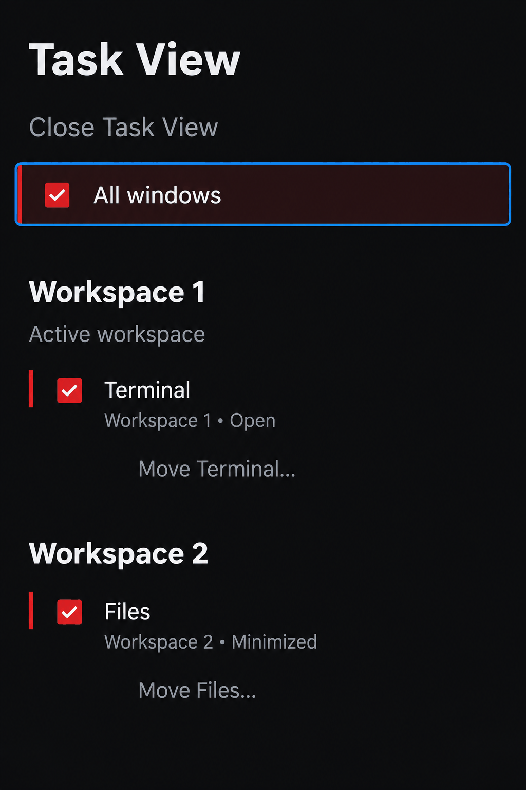
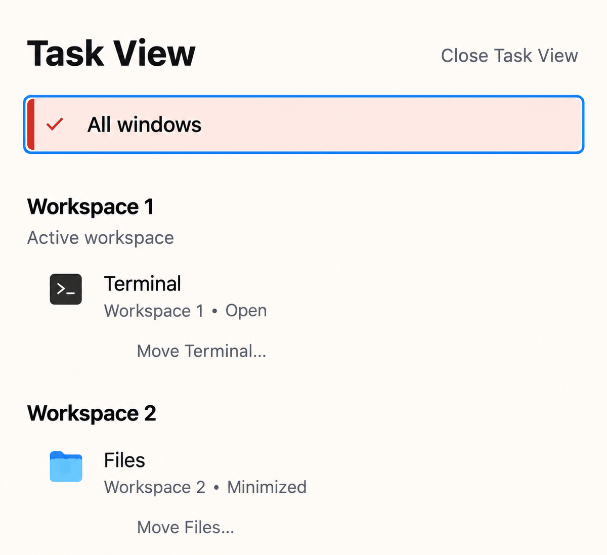
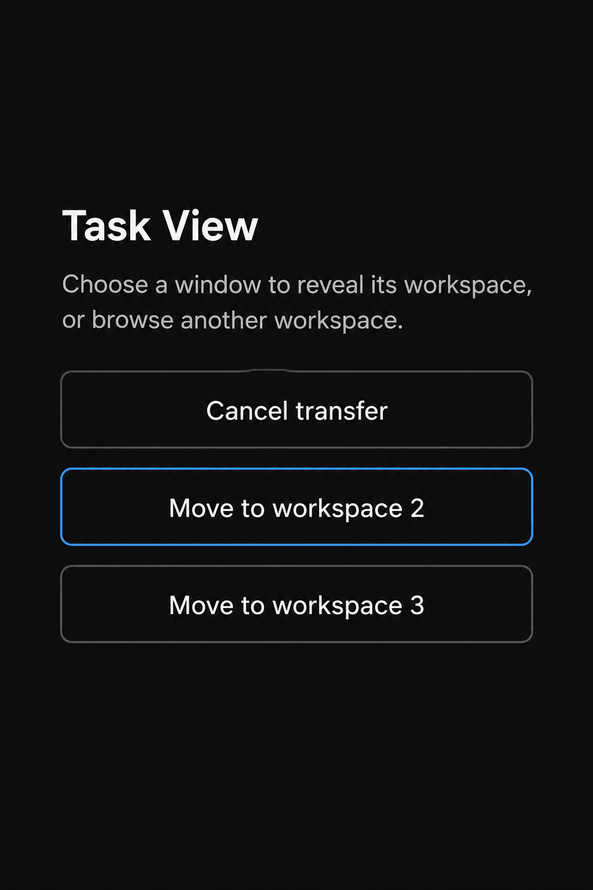
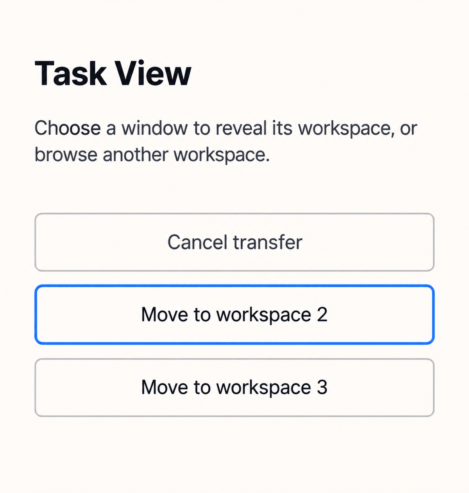

Task View and transfer
Source-faithful static specimens. Controls demonstrate appearance and do not issue desktop actions.
Families · Night
Task View
Choose a window to reveal its workspace, or browse another workspace.
Families · Dawn
Task View
Choose a window to reveal its workspace, or browse another workspace.
Overview · Night
Task View
This workspace has no windows. Go to its desktop, browse another workspace or close Task View.
Overview · Dawn
Task View
This workspace has no windows. Go to its desktop, browse another workspace or close Task View.
Transfer · Night
Task View
Choose a window to reveal its workspace, or browse another workspace.
Transfer · Dawn
Task View
Choose a window to reveal its workspace, or browse another workspace.
Selected unavailable filter · High contrast
Task View
Selected filter remains visible when unavailable.
Generated concept studies
The source-faithful specimens above define the presentation. These images are illustrative studies.




Operation feedback
Static source wording for separate operation states. These excerpts isolate the status and related controls. Each status is quiet and does not announce itself.
Task View
Move to workspace 2: applying to Terminal…
Task View
Move to workspace 2: not confirmed for Terminal. Check your windows; Refresh only reads status.
Task View
Move to workspace 2: refused for Terminal. Refresh window status, then choose again.